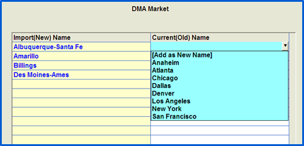

Station Import
The Station Import allows you to easily import new or update existing station information into the Affiliate database. The information can come from Act1, BIA or you can create your own .csv file. Stations and personnel can be defined and edited on an excel spreadsheet that is saved as a .csv (comma separated value) file before importing the data.
Import Site Options
The Using Station ID setting in Affiliate -> Site Options must be defined for the station import. There are several different options for this setting:
- If set to Yes, you must enter a unique Station ID in the Stations screen for each station. Obtain your list of Station IDs from your data service provider, such as Act1, BIA, or M Street. Once you enter the ID, your system will import all added (new) stations, and update any changes made to those stations already imported.
- If you choose to use Station IDs, every station must have a unique ID defined.
- If “No: import in update mode” is selected, you can still import without station IDs, but only existing stations will be updated, new stations will not be added into the database.
- If “No: import in add mode” is selected, when you run your import only new stations will be added into the database. Existing stations will not be updated with any changes.
Station Import Additional Bands
If bands other than FM and AM need to be imported by the Station Information Import, such as HD, those bands can be entered in this field on the Affiliate Site Options screen. Type in each band, with each band separated by a comma. (Note: FM and AM do not need to be entered in this field. Only bands other than FM and AM that also need to be imported.) After the additional bands have been entered and saved, when stations with those bands are detected during the Station Import, those stations will be added or updated as needed. Stations with bands that are not FM or AM or one of the additional allowed bands will continue to be bypassed during the Station Information import process. (This feature is available on version 7.1 and above.)
Import file
The import allows you to import 44 data fields whose data will appear in the Station Screen. Up to 5 people for each station can be defined with each station.
Four fields are mandatory: Call Letters, ID# (if Station IDs are used), DMA Name, and Zone.
If any mandatory field is missing from the first line of the import file, the import process will be terminated and a warning message will be displayed that a required column was missing and that the import was terminated.
All other fields are optional, and can be in any order, omitted (and added later), or never added.
Layout Example
This is an example of some of the fields and data in their layout.
Import Preparation – Station Formats
You have the choice to update the stations with ACT 1 format names or to manually select the formats defined in Counterpoint. If you are using your own names, define the Station Formats prior to importing the Station data using the File menu -> Manage Formats.
- New and Change formats is used to enter new formats or to change the name of a format that is already defined
- Use the Update Cross References once you have imported (BIA, ACT 1, etc.) files. This shows you the imported format is and what the corresponding Counterpoint format.
File Preparation
- Take data from any source (Act1, BIA, etc.)
- Import it into Excel or export and open/convert in Excel
- View the file and arrange the columns and column headers
- Using the list of Header names defined in the CSV layout section, add a header over each field you wish to import. The spelling of the Excel header name you define must exactly match the listed Header Name to be imported into the correct field. All mandatory fields must be included at a minimum.
- Delete any blank columns or any columns of data in the source file that you can’t import, or don’t want to import
- Remove any characters that do not belong such as &, <, >, >,?, [, etc.
- Sort each column and check for:
- Spelling errors
- Blank fields. If using Station IDs, and a station is defined on the import file with a Station ID of zero (or is blank), that station record will be bypassed when running the import.
- Save the file as a CSV file type.
- Place the file in the x:\csi\prod\import directory
- X: is the drive on which Counterpoint resides
Adding stations
If you are importing additional stations, you should generate the Group Report (Reports -> Group Report) for each option, and compare the names defined in the Affiliate database with the names defined in the import file. You may want to change the Group Name in the import file to match the predefined Group Names DMA, Format, etc.
Import rules
When importing a CSV file, the following rules are used:
- If some records (stations) have data for a column, then any records of that same column without data will result in the value being removed from the station (as it updated). One exception to this is for blank Station ID, Zone, and DMA Name fields. Stations with blank values for these fields will be bypassed (the fact that they were bypassed will be shown in the Result log file that is displayed at the end of the import process).
- If no records have data for a column, then that column will be ignored (previously defined values will be retained). We do not recommend adding columns that contain no data
- Omit that column by leaving its header blank.
- Do not omit mandatory fields.
- For a station to be added, the following minimum columns must be specified: Call Letters, ID# (only if using IDs), DMA Name, and Zone.
- After the last column with data, the remaining columns are not required.
- Each column is separated from the previous column by a comma.
- Each record is separated by a carriage return/line feed.
- No commas are allowed within the field unless the field is enclosed with Double Quotes (“2,000,000”).
- Fields requiring Yes or No will only allow Y or N.
Import Procedure when using Station IDs
- In Affiliate -> File, Select Import -> Update/Add Stations
- Browse to the x:\csi\prod\import directory.
- Select the file to import.
- Proof the contents of the file in the display.
- You are looking for:
- Correct number of columns
- Fields that should contain numeric value have numeric values
- You cannot proceed if you have misspelled any header names
- When proofed, Click OK
Select Report Options
- Report stations not included in the import file: this option gives you a list of the stations that are defined in Affiliate but not in the Imported file
- Report import stations not in system: this options gives you a list of stations in the file but not in Affiliate System. These stations were not added to the system during the import
Alaska and Hawaii Time Zone Conversion
On version 7.1 and above, two additional options appear: “Convert Alaska time zone to Pacific” and “Convert Hawaii time zone to Pacific”.
During the import process, if “A” is detected as the station zone and the “Convert Alaska time zone to Pacific” option is checked on, then the time zone will be changed to Pacific for that station. If that option is not checked on, then the station with a zone of A (Alaska) gets imported as the Alaska Time Zone.
Likewise, if “H” is detected as the station zone and the Hawaii option is checked on, then the time zone will be changed to Pacific for that station. If that new option is not checked on, then the station with a zone of H (Hawaii) gets imported as the Hawaii Time Zone.
Import the file
Click Import.
- Each Format, DMA Market, MSA Market and Owner is verified that they are defined (exist in the database). For those that are not defined, a screen display allows you to select which should be used instead of the imported name
- Any field that is blank or contains N/A will be bypassed (ignored)
- The Unused DMA Markets, MSA Markets and Owners will be removed
- Call Letter history is updated as part of the import process
- Today’s date (the import occurred) is used as the date the station call letters were altered
- Any import messages will be shown on screen and recorded in the import results
- A text file with all import results is stored in the x:\csi\prod\data\messages folder.
Owner Verification During Import Process
- You have the choice to update the stations with ACT 1 names or to manually select the owners defined in Counterpoint
- All Act 1 Owners must match an existing format
- Ideally, match the ACT 1 Owner to an existing Counterpoint Owner by selecting from the dropdown and TAB to next line. If you don’t have a match set the field to [Add as New Name].
- Once this is completed click on Continue to move to the next area.
DMA Market/MSA Market During Import Process
If any DMA Market or MSA Market does not match an existing name, then the following screen will pop-up.

Import Results
Changes are logged to the UpdateStationStatus.txt log file, which can be accessed from Accessories -> Messages -> Update Station Info.
The number of records updated is also written to the Affiliate Error Log, which can also be accessed from the Accessories Messages menu.